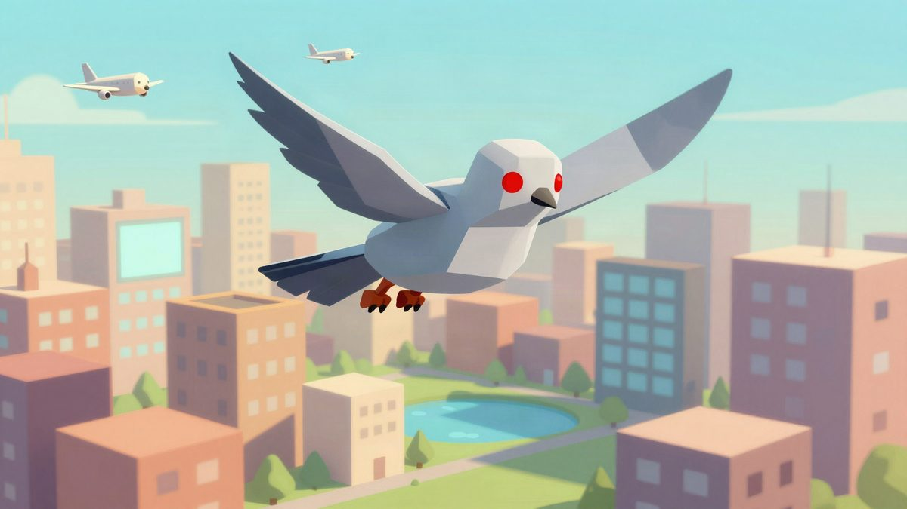

A developer built a spy pigeon game in seven days

COO is a free browser game where you play a robotic pigeon spying across Toronto. It was reportedly built in just seven days, and the creator says the map is so huge he still hasn't seen 99% of it.
A developer built a free browser game about a spy pigeon in seven days. In COO, you play a robotic pigeon flying over all of Toronto, with missions like stealing a USB stick, hacking a phone, and listening in on conversations. If people start noticing your weird behavior, you lower suspicion by cooing like a real pigeon. The creator says the city is so big, he still hasn't seen 99% of it himself.
Source: Automaton (JP)